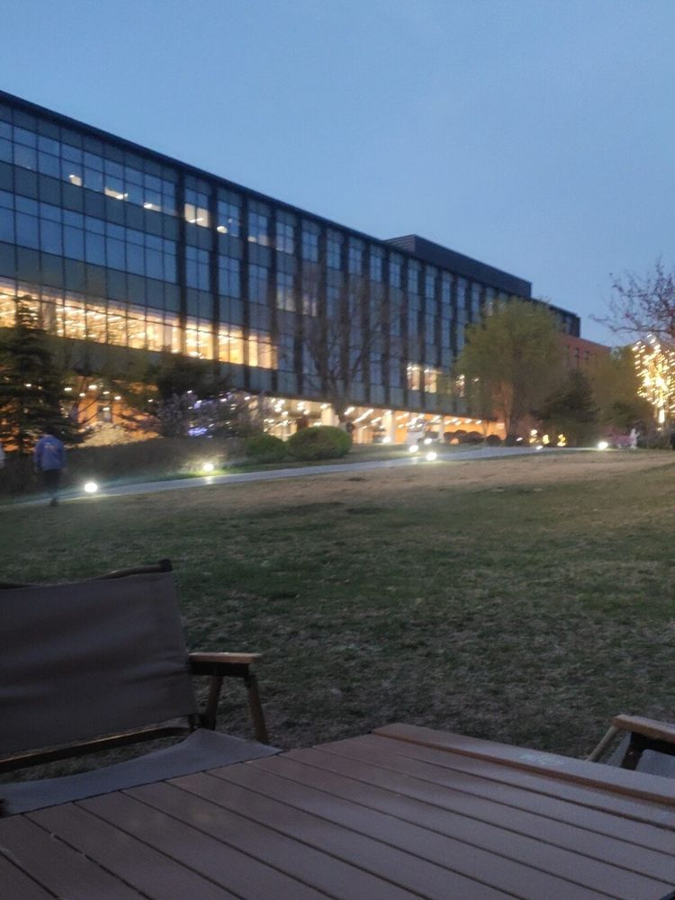
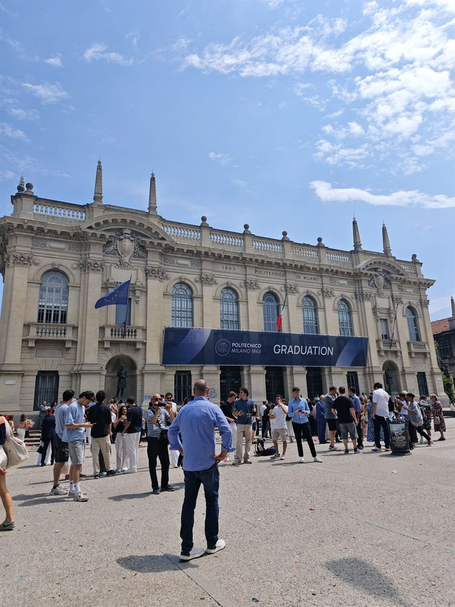
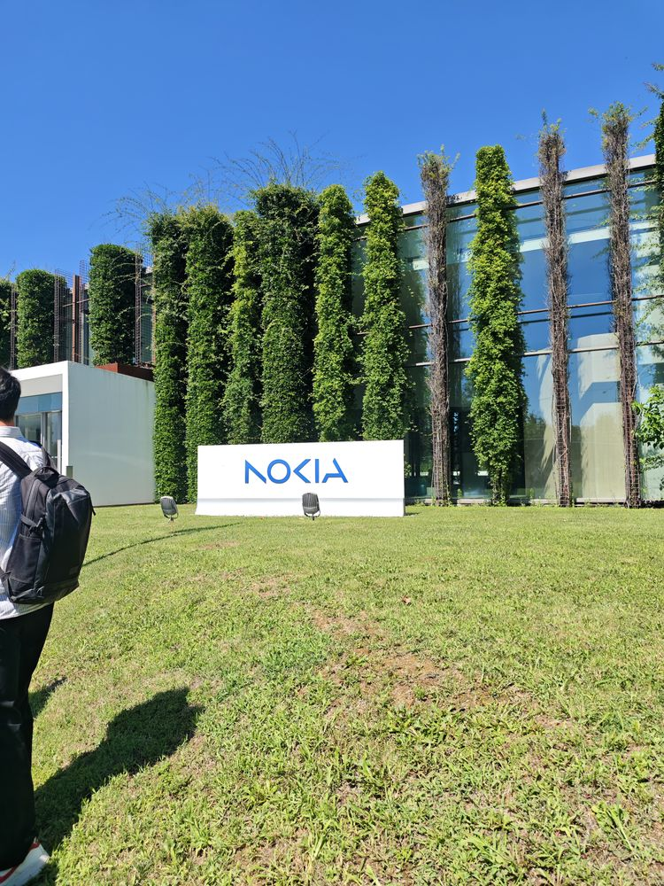
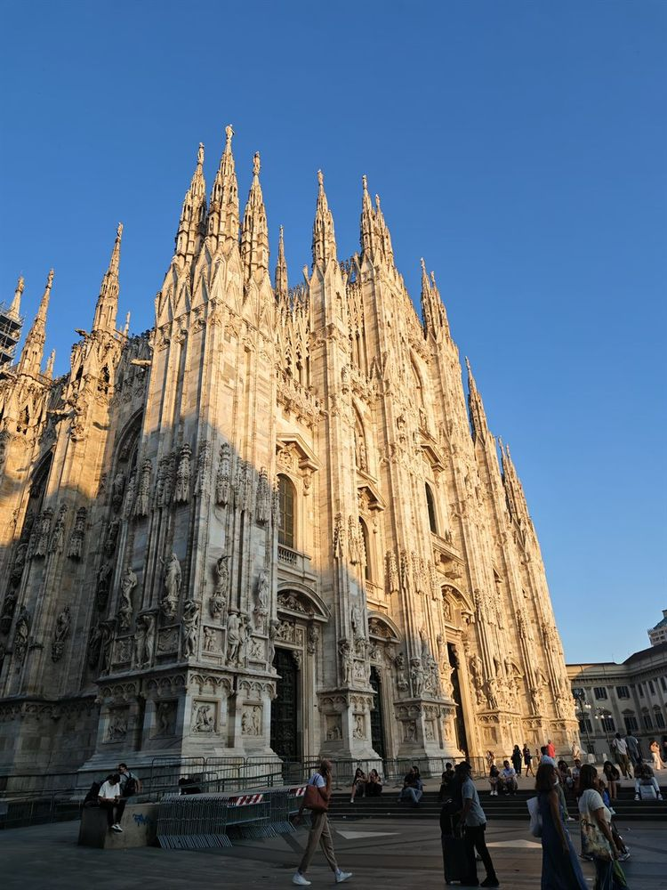

Self-introduction
Hi, I’m Hong.
M.Sc. student in Telecommunication Engineering at Politecnico di Milano, graduating in December 2026. I work on the infrastructure behind AI: the networks and communication that distributed training runs on.
Now
M.Sc. thesis · Since March 2026
Communication optimization for cross-datacenter AI training
BONSAI Lab, DEIB · with Prof. Massimo Tornatore and Prof. Qiaolun Zhang
Fast WAN re-routing + slow collective-schedule re-optimization, coordinated on a real GPU testbed.
First-author paper · INET4AI 2026 at ACM CoNEXT
−34.7% All-Gather latency vs. baseline
Before
-
2019 – 2023
Beijing Institute of Technology (BIT)
B.Sc. in Electronic Information Engineering · Beijing, China
-
2024
Huawei Beijing Research Center
Software engineer · Gateway Forwarding · Beijing, China

Me, 2024 
Huawei Beijing Research Center -
2024 – 2026
Politecnico di Milano (PoliMi)
M.Sc. in Telecommunication Engineering · Milan, Italy

Politecnico di Milano 
Presenting a course project at Nokia, Milan 
Milan -
Sep. 2025 – Jan. 2026
École Nationale Supérieure de l’Électronique et de ses Applications (ENSEA)
Erasmus+ exchange · Cergy, France


Next
Looking for a PhD position starting in 2027.
- Exploring frontier technology
- A strong research environment
- Fields I truly care about
- Sustainable development
- Understanding the “why”
- Connecting wireless, networking & AI
Where I want to go deeper
Communications
Signal processing
AI systems
Distributed & networked systems
Energy-aware systems
How I like to work
Thanks for reading. Say hello or go back to my homepage.